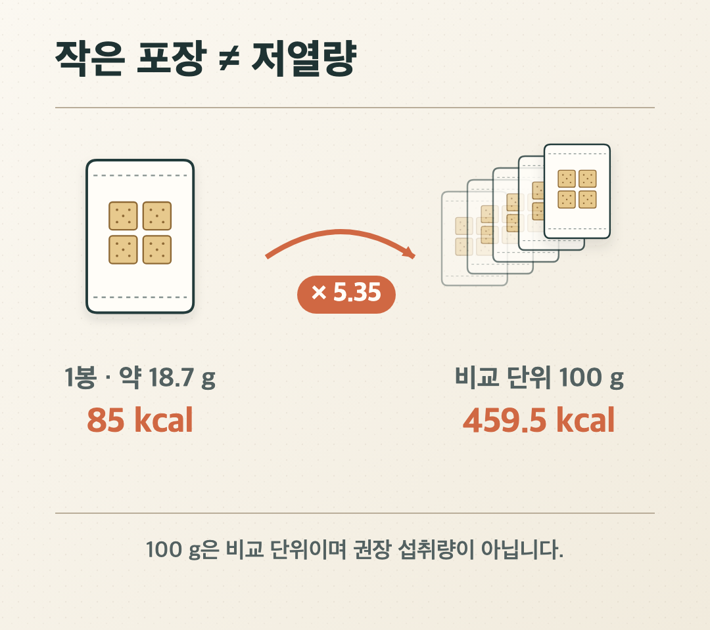

안녕하세요. dev.log입니다.
크림도 초콜릿도 없는 참크래커는 다른 과자보다 가벼워 보입니다. 그렇다면 실제로도 나은 선택일까요?
같은 무게로 보면 참크래커는 이번에 확인한 농심 포테토칩 오리지널과 오리온 초코칩쿠키보다 열량이 낮았습니다. 당류도 초코칩쿠키보다 적었습니다. 다만 100g당 약 460kcal라서 저열량 식품은 아닙니다. 장점은 ‘마음껏 먹어도 가벼운 과자’가 아니라, 달지 않고 한 봉 85kcal 단위로 양을 끊기 쉽다는 데 있습니다.

한 봉 85kcal, 100g으로는 459.5kcal
2026년 8월 10일 확인한 참크래커 280g 상품 영양정보는 37g, 즉 2봉에 170kcal로 표시되어 있습니다. 한 봉 열량은 85kcal입니다. 총중량 280g을 15개입으로 나누면 개별 포장은 약 18.7g입니다.
Codex가 같은 값을 100g으로 환산한 결과는 459.5kcal였습니다. 85kcal는 작은 포장 한 봉의 열량이고, 459.5kcal는 제품끼리 중량을 맞춰 비교하는 값입니다.
100g은 권장 섭취량이 아닙니다. 실제로 먹은 열량은 100g당 열량 × 먹은 중량 ÷ 100으로 계산합니다.
왜 달지 않은데도 460kcal일까
참크래커는 크라운제과 공식 제품 소개에서 SALTINE CRACKERS로 분류됩니다. 소금 크래커라는 이름은 맛의 계열을 가리킬 뿐, 소금이 주재료라는 뜻은 아닙니다. 공개된 원재료 정보에는 소맥분과 쇼트닝, 식용유 등이 함께 적혀 있습니다.
열량도 소금보다 밀가루의 탄수화물과 유지류의 지방에서 주로 나옵니다. 식품안전나라의 영양표시 안내에 따라 참크래커 37g의 탄수화물·단백질·지방을 계산하면 169kcal입니다. 포장 표시 170kcal와 거의 같습니다.
현행 식품등의 표시기준에서 고체 식품의 저열량 강조표시 기준은 100g당 40kcal 미만입니다. 참크래커의 환산값은 약 460kcal이므로, 법적 표시 기준에서 저열량 식품과는 거리가 있습니다.
포테토칩보다 19%, 초코칩쿠키보다 10% 낮은 열량
담백한 크래커 3종에 감자칩과 초코칩 쿠키를 더해 같은 무게로 비교했습니다.
| 제품 | 종류 | 표시 기준 | 100g당 열량 | 100g당 당류 |
|---|---|---|---|---|
| 아이비 | 담백한 크래커 | 23g | 434.8kcal | 4.3g 미만 |
| 참크래커 | 담백한 크래커 | 37g | 459.5kcal | 2.7g |
| 제크 오리지널 | 담백한 크래커 | 50g | 490.0kcal | 8.0g |
| 오리온 초코칩쿠키 | 단맛 쿠키 | 64g | 512.5kcal | 28.1g |
| 농심 포테토칩 오리지널 | 감자칩 | 60g | 566.7kcal | 공개값 없음 |
아이비, 제크 오리지널, 초코칩쿠키의 공개 영양정보와 농심 공식 제품 정보를 Codex가 100g 기준으로 환산했습니다.
이 표본에서 참크래커는 오리온 초코칩쿠키보다 약 10%, 농심 포테토칩 오리지널보다 약 19% 열량이 낮았습니다. 당류는 100g당 2.7g으로 초코칩쿠키의 28.1g보다 크게 낮았습니다. 적어도 이번에 확인한 두 제품과 비교하면 참크래커의 상대적 장점도 분명합니다.
다만 다섯 제품만 확인한 결과이므로 과자 시장 전체의 평균이나 순위는 아닙니다. 제품도 리뉴얼될 수 있어 구매 시점의 실제 포장이 최종 기준입니다.
괜찮은 선택이 되는 두 가지 조건
참크래커를 고를 만한 조건은 두 가지입니다. 초코칩쿠키처럼 단 제품 대신 당류가 낮은 제품을 찾고, 먹을 양을 한 봉으로 미리 정하려는 경우입니다. 한 봉만 꺼내 먹는다면 실제 섭취 열량도 85kcal에서 멈춥니다.
반대로 봉지가 작다는 이유로 계속 뜯으면 두 봉 170kcal, 네 봉 340kcal가 됩니다. 치즈나 잼, 땅콩버터를 곁들이면 그 열량도 더해야 합니다. 참크래커 37g의 나트륨도 240mg이므로 칼로리만 볼 필요는 없습니다.
결론적으로 참크래커는 저칼로리 과자는 아니지만, 이번에 비교한 포테토칩·초코칩쿠키 대신 고르고 한 봉에서 멈춘다면 비교적 계산하기 쉬운 선택지입니다. 선택 이유는 ‘살이 안 찌는 과자라서’가 아니라, ‘덜 달고 정해 둔 양만 먹기 쉬워서’에 가깝습니다.
제품끼리 비교할 때는 100g 값을, 실제로 먹을 때는 한 봉 열량과 봉지 수를 보면 됩니다. 이 두 숫자를 나눠 보면 ‘생각보다 높다’에서 끝나지 않고, 내 간식으로 쓸 만한지까지 판단할 수 있습니다.